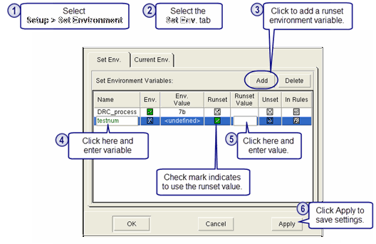

You can add an
environment variable to your runset and set the value using the
Set Environment Variables dialog box. Runset variables added in
this way can be used in any of the Calibre Interactive GUI fields
that accept environment variables.
This example shows how to add the runset environment
variable testnum seen in Figure 1 in “Set Environment Variables Dialog Box”.
Procedure
- Choose to display
the Set Environment Variables dialog box.
- Click the Set Env tab.
- Click the Add button.
A new row appears in the table of environment variables.
- Click in the Name column of
the new row and enter testnum for the name of the environment variable,
as shown in Figure 1.
When you add a new variable,
it is initialized with a green check mark in the Runset column,
indicating that the Runset value is used in the Calibre Interactive
session.
- Click in the Runset Value
column and enter a value for the variable.
- Click Apply to
save the settings.
When you save your runset (),
the new runset environment variable is saved with the runset.
Tip To add
an environment variable to the rule file, you must edit the rule
file. After you save the rule file, click Load on
the Rules pane to see the new rule file environment variable displayed
in the Set Env. tab of the Set Environment
Variables dialog box. You cannot use the Set Environment Variables
dialog box to add an environment variable to be used in the rule
file.
Examples
Adding a runset environment variable
is illustrated in the following example:
Figure 1. Adding a Runset Environment
Variable